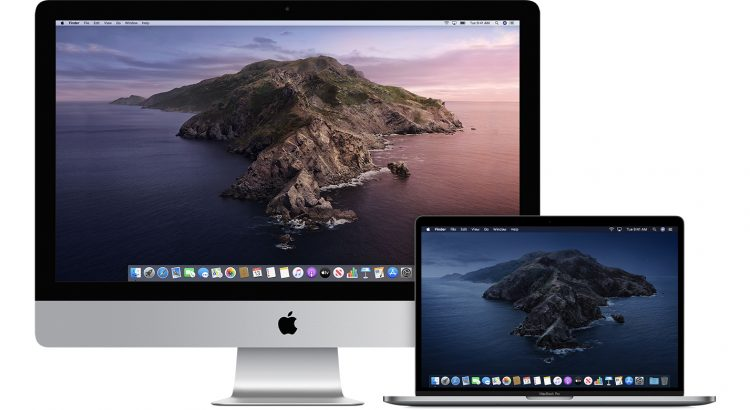

operační systém pro počítače Macintosh společnosti Apple.První byl Mac OS X 10.0 Cheetah, který byl vydán 24.března 2001. Aktuální verze macOSu je 10.15 s kódovým označením Catalina představená 7.října 2019.

Původními pracovními verzemi byly Mac OS X DP,vydána 10.května 1999,Mac OS X DP2, vydána v listopadi 1999,Mac OS X DP3, vydána v únoru 2000, Mac OS X DP4, vydána 15.května 2000 a Mac OS X Public Beta, vydána 13. září 2000.
Jak už jsme řeli, tak první opearační systém od macu vyšel na trh 24.března 2001 pod názvem Mac OS X 10.0 Cheetah. Jej následoval Mac OS X 10.1 Puma 25.září 2001, Mac OS X 10.2 Jaguar, který vyšel 23.srpna 2002 jako vylepšená podpora pro síť Microsoft Windows, Mac OS X 10.3 Panther 24.října 2003, Mac OS X 10.4 Tiger, 29.dubna 2005, Mac OS X 10.5 Leopard, který vyšel 26.října 2007, Mac OS X 10.6 Snow Leopard, vydán 29.srpna 2009, Mac OS X 10.7 Lion, který vyšel 20.července 2011, ale poprvé představen už 20.října 2010, OS X 10.8 Mountain Lion, vydán 19. července 2012 s hlubší podporou iCloud, OS X 10.9 Mavericks, vydán 22.října 2013 s převzetými některými funkcemi a aplikacemi z iOS. Dále také OS X 10.10 Yosemite, vydán 16.října 2014, OS X 10.11 El Capitan, vydán 30.září 2015, macOS 10.12 Sierra, který vyšel na podzim 2016, macOS 10.13 High Sierra, vydán 25.září 2017, macOS 10.14 Mojave, vydán 24.září 2018 a macOS 10.15 Catalina, který vyšel 7. října 2019.
